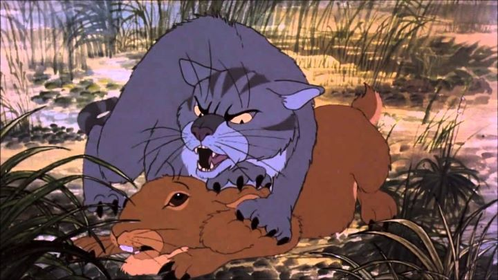

I remember hanging around a University lounge as a student, and overhearing a conversation some other friends were having. A girl seemed distraught: "I just saw a movie about rabbits that kill each other!" she said, mortified. "Ah!" I exclaimed. "You watched 'Watership Down!' ". The 1978 animated classic is based on a classic British novel by Richard Adams, only published a few years earlier. My family spoiled me as a child with many VHS tapes of animated movies, including "Watership Down," which I probably first watched when under 10 years old. While it isn't entirely unfit for children, the movie does deal with mature themes, and doesn't shy away from violence when cartoon rabbits start biting at each other, blood everywhere. Not to mention the religous metaphors and some themes regarding cults and power. It's understandable then that the movie is somewhat infamous for its content, moreso thanks to the rating in England classifying it as appropriate for children of any age. If not prepared, "Watership Down" can scar a person for life, no matter their age. The UK's history in animated features tends to be geared more to older audiences, from the 1954 animated adaptation of "Animal Farm" to 1986 film "When The Wind Blows." A far cry from anything Hollywood would ever dare release."Watership Down" 's plot feels like it came from a great novel. Set entirely from the perspective of a herd of rabbits living in a field, the film introduces us to a society with their own culture and beliefs. In one English countryside, a rabbit named Fiver sees an horrible vision of death across the valley, and urges his tribe of rabbits to escape. Unable to convince everyone, a small group agrees to leave (doing so in the dead of night, passing a large human-made sign saying something about "future construction site"). The group quests to find a new home for themselves in a new valley, and face constant threats from carnivorous cats and badgers, from human hunters and traps, and from other rabbit tribes, each with their own rules that could be supported or disputed in terms of their effectiveness, and often coming in conflict with our wandering group. Rabbits do die along the way. But as the excellent opening fable about the God Frith and the Rabbit Prince tells, it is natural that there exist many dangers for their people; else, they would multiply indefinitely. In exchange for creating so many predators for rabbits, Frith provides the Prince with gifts of speed and hearing for a fighting chance, to be passed on to his children. "All the world will be your enemy, Prince with a Thousand Enemies, and whenever they catch you, they will kill you... Be cunning and full of tricks, and your people shall never be destroyed." Truly, the fable in the opening alone would be enough to grant "Watership Down" a 10/10 for story. If you are particularly anti-religous, you might be turned of by the underlying themes of the story, but then a lot of great novels from the mid 1900's would be lost on you. Aside from that, the political drama and violence provides a lot more depth than typically seen in animation. It's a beautiful movie, as far as story is concerned. The music also feels timeless (although the insert vocal song by Art Garfunkel feels out of place, it's also a beautiful piece). The voice acting has an impressive cast, and while stereotypically British, it provides great gravitas to the story. If there is any element that doesn't hold up today, it would be the visuals. There is a certain quality that can only be enjoyed from cel animation pre 1990, before digital clean-up was viable. "Watership Down" has a warmth in the dust and scratches, and in the occasional shortcuts in animation. But while I wouldn't dare change a thing to how "Watership Down" looks, it's hard to deny animation has come a long way. Perhaps I shouldn't complain... a 2018 mini-series adaptation with an updated voice cast uses CGI, and looks horrendous by comparison. Thankfully, the original feature provides a better way to experience the story."Watership Down" is a classic animated film, and would still be even without the violence that so many remember it by. Story is important in entertainment, and this movie shows why, transcending the benefits that animation normally provides. But even if only for the stylistic and beautifully narrated opening, it's worth the effort to have animated it.
- "Ani" More reviews can be found at : https://2danicritic.github.io/ Previous review: review_Voices_of_a_Distant_Star Next review: review_Weathering_With_You